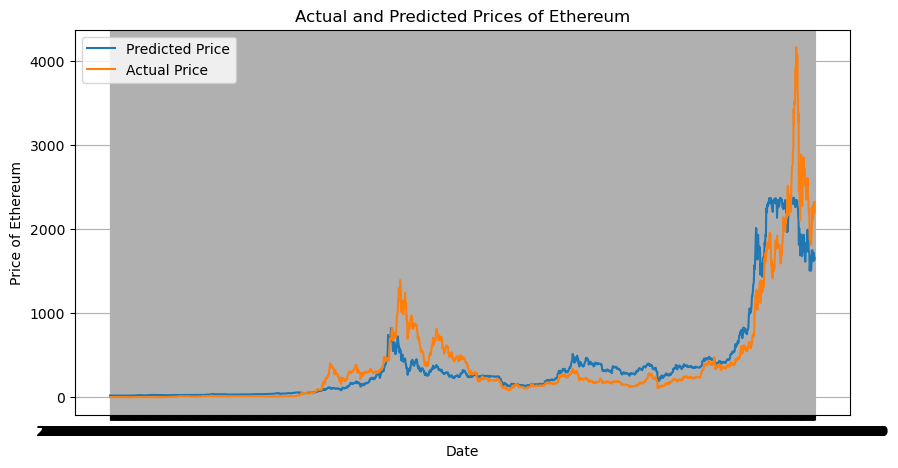

Bitcoin vs Ethereum Market Analysis
Analyzed historical price data for Bitcoin and Ethereum to compare trends, volatility, and return distributions using Python.
Python
pandas
matplotlib
seaborn
scipy
More details
Problem
Understanding how major cryptocurrencies behave over time and how their price movements compare can help identify patterns and risk differences.
Approach
Cleaned and processed time-series data, calculated returns, and created visualizations to explore price trends and relationships between BTC and ETH.
Results & Impact
Found differences in volatility and growth patterns between Bitcoin and Ethereum, highlighting how each asset behaves under different market conditions.